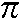

The first section of this appendix is a repeat of that part of the Introduction concerning the keyboard and screen.
ZX Spectrum characters comprise not only the single symbols (letters, digits, etc), but also the compound tokens (keywords, function names, etc) and all these are entered trom the keyboard rather than being spelled out. To obtain all these functions and commands some keys have five or more distinct meanings, given partly by shifting the keys (i.e. pressing either the CAPS SHIFT key or the SYMBOL SHIFT key at the same time as the required one) and partly by having the machine in different modes.
The mode is indicated by the cursor, a flashing letter that shows where the next character from the keyboard will be inserted.
K (for keywords) mode automatically replaces L mode when the machine is expecting a command or program line (rather than INPUT data), and from its position on the line it knows it should expect a line number or a keyword. This is at the beginning of the line, or just after THEN, or just after: (except in a string). If unshifted, the next key will be interpreted as either a keyword (written on the keys), or a digit.
L (for letters) mode normally occurs at all other times. If unshifted, the next key will be interpreted as the main symbol on that key, in lower case for letters.
In both K and L modes, SYMBOL SHIFT and a key will be interpreted as the subsidiary red character on the key and CAPS SHIFT with a digit key will be interpreted as the control function written in white above the key. CAPS SHIFT with other keys does not affect the keywords in K mode, and in L mode it converts lower case to capitals.
C (for capitals) mode is a variant of L mode in which all letters appear as capitals. CAPS LOCK causes a change from L mode to C mode or back again.
E (for extended) mode is used for obtaining further characters, mostly tokens. It occurs after both shift keys are pressed together, and lasts for one key depression only. In this mode, a letter gives one character or token (shown in green above it) if unshifted, and another (shown in red below it) if pressed with either shift. A digit key gives a token if pressed with SYMBOL SHIFT; otherwise it gives a colour control sequence.
G (for graphics) mode occurs after GRAPHICS (CAPS SHIFT and 9) is pressed, and lasts until it is pressed again. A digit key will give a mosaic graphic, quit GRAPHICS or DELETE, and each of the letter keys apart from V, W, X, Y and Z, will give a user-defined graphic.
If any key is held down for more than about 2 or 3 seconds, it will start repeating.
Keyboard input appears in the bottom half of the screen as it is typed, each character (single symbol or compound token) being inserted just before the cursor. The cursor can be moved left with CAPS SHIFT and 5, or right with CAPS SHIFT and 8. The character before the cursor can be deleted with DELETE (CAPS SHIFT and 0). (Note: the whole line can be deleted by typing EDIT (CAPS SHIFT and 1) followed by ENTER.)
When ENTER is pressed, the line is executed, entered into the program, or used as INPUT data as appropriate, unless it contains a syntax error. In this case a flashing ? appears next to the error.
As program lines are entered, a listing is displayed in the
top half of the screen. The manner in which the listing is
produced is rather complicated, and explained more fully in
Chapter 2. The last line entered is called the current line and
is indicated by the symbol >, but this can be changed by using
the keys  (CAPS SHIFT and 6) and
(CAPS SHIFT and 6) and  (CAPS SHIFT and 7). If
EDIT (CAPS SHIFT and 1) is pressed, the current line is brought
down to the bottom part of the screen and can be edited.
(CAPS SHIFT and 7). If
EDIT (CAPS SHIFT and 1) is pressed, the current line is brought
down to the bottom part of the screen and can be edited.
When a command is executed or a program run, output is
displayed in the top half of the screen and remains until a
program line is entered, or ENTER is pressed with an empty line,
or  or
or  is pressed. In the bottom part appears a report
giving a code (digit or letter) referring you to Appendix B, a
brief verbal summary of what Appendix B says, the number of the
line containing the last statement executed (or 0 for a command)
and the position of the statement within the line. The report
remains on the screen until a key is pressed (and indicates K
mode).
is pressed. In the bottom part appears a report
giving a code (digit or letter) referring you to Appendix B, a
brief verbal summary of what Appendix B says, the number of the
line containing the last statement executed (or 0 for a command)
and the position of the statement within the line. The report
remains on the screen until a key is pressed (and indicates K
mode).
In certain circumstances, CAPS SHIFT with the SPACE key acts as a BREAK, stopping the computer with report D or L. This is recognised
This has 24 lines, each 32 characters long, and is divided into two parts. The top part is at most 22 lines and displays either a listing or program output. When printing in the top part has reached the bottom, it all scrolls up one line; if this would involve losing a line that you have not had a chance to see yet, then the computer stops with the message scroll?. Pressing the keys N, SPACE or STOP will make the program stop with report D BREAK- CONT repeats; any other key will let the scrolling continue. The bottom part is used for inputting commands, program lines, and INPUT data, and also for displaying reports. The bottom part starts of as two lines (the upper one blank), but it expands to accommodate whatever is typed in. When it reaches the current print position in the top half, further expansions will make the top half scroll up.
Each character position has attributes specifying its paper (background) and ink (foreground) colours, a two-level brightness, and whether it flashes or not. The available colours are black, blue, red, magenta, green, yellow and white.
The edge of the screen can be set to any of the colours using the border statement.
A character position is divided into 8x8 pixels and high resolution graphics are obtained by setting the pixels individually to show either the ink or paper colour for that character position.
The attributes at a character position are adjusted whenever a character is written there or a pixel is plotted The exact manner of the adjustment is determined by the pnnting parameters. of which there are two sets (called permanent and temporary) of six: the PAPER, INK, FLASH, BRIGHT, INVERSE and OVER parameters. Permanent parameters for the top part are set up by PAPER, INK, etc, statements, and last until further notice. (Initially they are black ink on white paper. With normal brightness, no flashing, normal video and no overprinting). Permanent parameters for the bottom part use the border colour as the paper colour, with a black or white contrasting ink colour, normal brightness, no flashing, normal video and no overprinting.
Temporary parameters are set up by PAPER, INK, etc, items, which are embedded in PRINT, LPRINT, INPUT, PLOT, DRAW and CIRCLE statements, and also by PAPER, INK, etc control characters when they are printed to the television - they are followed by a further byte to specify the parameter value. Temporary parameters last only to the end of the PRINT (or whatever) statement, or, in INPUT statements, until some INPUT data is needed from the keyboard, when they are replaced by the permanent parameters.
PAPER and INK parameters are in the range 0 to 9. Parameters 0 to 7 are the colours used when a character is printed:
| 0 | black |
| 1 | blue |
| 2 | red |
| 3 | magenta |
| 4 | green |
| 5 | cyan |
| 6 | yellow |
| 7 | white |
Parameter 8 ('transparent') specifies that the colour on the screen is to be left unchanged when a character is printed.
Parameter 9 ('contrast') specifies that the colour in question (paper or ink) is to be made either white or black to show up against the other colour.
FLASH and BRIGHT parameters are 0,1 or 8: 1 means that flashing or brightness is turned on, 0 that it is turned off, and 8 ('transparent') that it is left unchanged at any character position.
OVER and INVERSE parameters are 0 or 1:
OVER 0 new characters obliterate old ones
OVER 1 the bit patterns of the old and new characters are combined using an 'exclusive or' operation (overprinting)
INVERSE 0 new characters are printed as ink colour on paper colour (normal video)
INVERSE 1 new characters are printed as paper colour on ink colour (inverse video)
When a TAB control character is received by the television, two more bytes are expected to specify a tab stop n (less significant byte first). This is reduced modulo 32 to n0 (say), and then sufficient spaces are printed to move the printing position into column n0. When a comma control character is received, then sufficient spaces (at least one) are printed to move the printing position into column 0 or column 16. When an ENTER control character is received, the printing position is moved on to the next line.
Output to the ZX printer is via a buffer one line (32 characters) long, and a line is sent to the printer
TAB controls and comma controls output spaces in the same way as on the television.
The AT control changes the printing position using the column number, and ignores the line number.
The printer is affected by INVERSE and OVER controls (and also statements) in the same way as the screen is, but not by PAPER, INK, FLASH or BRIGHT.
The printer will stop with error B if BREAK is pressed. If the printer is absent the output will simply be lost.
Numbers are stored to an accuracy of 9 or 10 digits. The largest number you can get is about 1038, and the smallest (positive) number is about 4*10-39.
A number is stored in the ZX Spectrum in floating point binary with one exponent byte e (l<=e<=255), and four mantissa bytes m (1/2<=m<l). This represents the number m*2e-128.
Since 1/2<=m<l, the most significant bit of the mantissa m is always 1. Therefore in actual fact we can replace it with a bit to show the sign - 0 for positive numbers, 1 for negative.
Small integers have a special representation in which the first byte is 0, the second is a sign byte (0 or FFh) and the third and fourth are the integer in twos complement form, the less significant byte first.
Numeric variables have names of arbitrary length, starting with a letter and continuing with letters and digits. Spaces and colour controls are ignored and all letters are converted to lower-case letters.
Control variables of FOR-NEXT loops have names a single letter long.
Numeric arrays have names a single letter long, which may be the same as the name of a simple variable. They may have arbitrarily many dimensions of arbitrary size. Subscripts start at 1.
Strings are completely flexible in length. The name of a string consists of a single letter followed by $.
String arrays can have arbitrarily many dimensions of arbitrary size. The name is a single letter followed by $ and may not be the same as the name of a string. All the strings in a given array have the same fixed length, which is specified as an extra, final dimension in the DIM statement. Subscripts start at 1.
Slicing: Substrings of strings may be specified using slicers. A slicer can be
and is used in expressing a substring either by
(a) string expression (slicer)
(b) string array variable (subscript,..., subscript, slicer)
which means the same as
string array variable (subscript . . . , subscript) (slicer)
In (a), suppose the string expression has the value s$.
If the slicer is empty, the result is s$ considered as a substring of itself.
If the slicer is a numerical expression with value m, then the result is the mth character of s$ (a substring of length 1).
If the slicer has the form (iii), then suppose the first numerical expression has the value m (the default value is 1), and the second, n (the default value is the length of s$).
If 1<=m<=n<=the length of s$ then the result is the substring of s$ starting with the mth character and ending with the nth. If 0<=n<m then the result is the empty string. Otherwise, error 3 results.
Slicing is performed before functions or operations are evaluated, unless brackets dictate otherwise.
Substrings can be assigned to (see LET).
If a string quote is to be written in a string literal, then it must be doubled.
The argument of a function does not need brackets if it is a constant or a (possibly subscripted or sliced) variable.
| Function | Type of argument (x) |
Result | ||||||
| ABS | number | Absolute magnitude | ||||||
| ACS | number | Arccosine in radians. Error A if x not in the range -1 to +1 |
||||||
| AND | binary operation, right operand always a number. |
|
||||||
| ASN | number | Arcsine in radians. Error A if x not in the range -1 to +1 |
||||||
| ATN | number | Arctangent in radians | ||||||
| ATTR | two arguments, x and y, both numbers; enclosed in brackets | A number whose binary form codes the attributes of line x, column y on the television. Bit 7 (most significant) is 1 for flashing, 0 for not flashing. Bit 6 is 1 for bright, 0 for normal. Bits 5 to 3 are the paper colour. Bits 2 to 0 are the ink colour. Error B unless 0<=x<=23 and 0<=y<=31 | ||||||
| BIN | This is not really a function, but an alternative notation for numbers: BIN followed by a sequence of 0s and 1s is the number with such a representation in binary. | |||||||
| CHR$ | number | The character whose code is x, rounded to the nearest integer | ||||||
| CODE | string | The code of the first character in x (or 0 if x is the empty string) | ||||||
| COS | number (in radians) | Cosine x | ||||||
| EXP | number | ex | ||||||
| FN | FN followed by a letter calls up a user-defined function (see DEF). The arguments must be enclosed in brackets; even if there are no arguments the brackets must still be present. | |||||||
| IN | number | The result of inputting at processor level from port x (0<=x<=FFFFh) (loads the bc register pair with x and does the assembly language instruction in a(c)) | ||||||
| INKEY$ | none | Reads the keyboard. The result is the character representing (in L or C mode) the key pressed if there is exactly one, else the empty string. | ||||||
| INT | number | Integer part (always rounds down) | ||||||
| LEN | string | Length | ||||||
| LN | number | Natural logarithm (to base e). Error A if x<=0 |
||||||
| NOT | number | 0 if x<>0, 1 if x=0. NOT has priority 4 | ||||||
| OR | binary operation, both operands numbers |
OR has priority 2 |
||||||
| PEEK | number | The value of the byte in memory whose address is x (rounded to the nearest integer). Error B if x is not in the range 0 to 65535 | ||||||
| PI | none |  (3.14159265 . . . ) | ||||||
| POINT | Two arguments, x and y, both numbers; enclosed in brackets | 1 if the pixel at (x,y) is ink colour. 0 if it is paper colour. Error B unless 0<=x<=255 and 0<=y<= 175 | ||||||
| RND | none | The next pseudorandom number in a sequence generated by taking the powers of 75 modulo 65537, subtracting 1 and dividing by 65536. 0<=y< 1 | ||||||
| SCREEN$ | Two arguments, x and y, both numbers; enclosed in brackets | The character that appears, either normally or inverted, on the television at line x, column y. Gives the empty string, if the character is not recognised. Error B unless 0<=x<=23 and 0<=y<=31 | ||||||
| SGN | number | Signum: the sign (-1 for negative, 0 for zero or +1 for positive) of x | ||||||
| SIN | number(in radians) | Sine x | ||||||
| SQR | number | Square root. Error A if x<0 |
||||||
| STR$ | number | The string of characters that would be displayed if x were printed | ||||||
| TAN | number(in radians) | Tangent | ||||||
| USR | number | Calls the machine code subroutine whose starting address is x. On return, the result is the contents of the bc register pair | ||||||
| USR | string | The address of the bit pattern for the
user-defined graphic corresponding to x. Error A if x is not a single letter between a and u, or a user-defined graphic |
||||||
| VAL | string | Evaluates x (without its bounding
quotes) as a numerical expression. Error C if x contains a syntax error, or gives a string value. Other errors possible, depending on the expression |
||||||
| VAL$ | string | Evaluates x (without its bounding
quotes) as a string expression. Error C if x contains a syntax error or gives a numeric value. Other errors possible, as for VAL |
||||||
| - | number | Negation |
The following are binary operations:
| + | Addition (on numbers), or concatenation (on strings) | |
| - | Subtraction | |
| * | Multiplication | |
| / | Division | |
 |
Raising to a power. Error B if the left operand is negative | |
| = | Equals | |
| > | Greater than | Both operands must be of the same type. The result is a number 1, if the comparison holds and 0 if it does not |
| < | Less than | |
| <= | Less than or equal to | |
| >= | Greater than or equal to | |
| <> | Not equal to | |
Functions and operations have the following priorities:
| Operation | Priority |
| Subscripting and slicing | 12 |
| All functions except NOT and unary minus | 11 |
| 10 | |
| Unary minus (i.e. minus just used to negate something) | 0 |
| *, / | 8 |
| +, - (minus used to subtract one number from another) | 6 |
| =, >, <, <=, >=, <> | 5 |
| NOT | 4 |
| AND | 3 |
| OR | 2 |
In this list,
| a | represents a single letter |
| v | represents a variable |
| x, y, z | represent numerical expressions |
| m, n | represent numerical expressions that are rounded to the nearest integer |
| e | represents an expression |
| f | represents a string valued expression |
| s | represents a sequence of statements separated by colons |
| c | represents a sequence of colour items, each terminated by commas, or semi-colons; a colour item has the form of a PAPER, INK, FLASH, BRIGHT, INVERSE or OVER statement. |
Note that arbitrary expressions are allowed everywhere (except for the line number at the beginning of a statement).
All statements except INPUT, DEF and DATA can be used either as commands or in programs (although they can be more sensible in one than the other). A command or program line can have several statements, separated by colons (:). There is no restriction on whereabouts in a line any particular statement can occur - although see IF and REM.
| BEEP x, y | Sounds a note through the loudspeaker for x seconds at a pitch y semitones above middle C (or below if y is negative). |
| BORDER m | Sets the colour of the border of the
screen and also the paper colour for the lower part of
the screen. Error K is m not in the range 0 to 7. |
| BRIGHT | Sets brightness of characters
subsequently printed. n=0 for normal, 1 for bright. 8 for
transparent. Error K if n not 0, 1 or 8 |
| CAT | Does not work without Microdrive, etc |
| CIRCLE x, y, z | Draws an arc of a circle, centre (x,y), radius z |
| CLEAR | Deletes all variables, freeing the space
they occupied. Does RESTORE and CLS, resets the PLOT position to the bottom left-hand corner and clears the GO SUB stack |
| CLEAR n | Like CLEAR. but if possible changes the system variable RAMTOP to n and puts the new GO SUB stack there |
| CLOSE # | Does not work without Microdrive, etc |
| CLS | (Clear Screen). Clears the display file |
| CONTINUE | Continues the program, starting where it
left off last time it stopped with report other than 0.
If the report was 9 or L, then continues with the
following statement (taking jumps into account);
otherwise repeats the one where the error occurred. If the last report was in a command line then CONTINUE will attempt to continue the command line and will either go into a loop if the error was in 0:1, give report 0 if it was in 0: 2, or give error N if it was 0: 3 or greater. CONTINUE appears as CONT on the keyboard |
| COPY | Sends a copy of the top 22 lines of
display to the printer, if attached; otherwise does
nothing. Note that COPY can not be used to print the
automatic listings that appear on the screen. Report D if BREAK pressed |
| DATA a1 , a2 , a3 , ... | Part of the DATA list. Must be in a program |
| DEF FN a (a1 . . . ak )=e | User-defined function definition; must
be in a program. Each of a and a1 to ak is either a
single letter or a single letter followed by '$' for
string argument or result. Takes the form DEF FN a()=e if no arguments |
| DELETE f | Does not work without Microdrive, etc |
| DIM a( n1 , . . . ,nk ) | Deletes any array with the name a, and sets up an array a of numbers with k dimensions n1 , ... ,nk. Initialises all the values to 0 |
| DIM a$( n1 , . . . ,nk ) | Deletes any array or string with the
name a$, and sets up an array of characters with k
dimensions nl ,...,nk. Initialises all the values to
" ". This can be considered as an array of
strings of fixed length nk , with k-l dimensions
nl,...,nk-l . Error 4 occurs if there is no room to fit
the array in. An array is undefined until it is dimensioned in a DIM satement |
| DRAW x,y | DRAW x,y,0 |
| DRAW x,y,z | Draws a line from the current plot
position moving x horizontally and y vertically relative
to it while turning through an angle z. Error B if it runs off the screen |
| ERASE | Does not work without Microdrive, etc. |
| FLASH | Defines whether characters will be flashing or steady. n=0 for steady, n=l for flash, n=8 for no change. |
| FOR a=x TO y | FOR a=x TO y STEP 1 |
| FOR a=x TO y STEP z | Deletes any simple variable a and sets
up a control variable with value x, limit y, step z, and
looping address referring to the statement after the FOR
statement. Checks if the initial value is greater (if
step>=0) or less (if step<0) than the limit, and if so then skips to statement NEXT a, giving error 1 if there is none. See NEXT. Error 4 occurs if there is no room for the control variable. |
| FORMAT f | Does not work without the Microdrive, etc |
| GOSUB n | Pushes the line number of the GOSUB
statement onto a stack; then as GO TO n. Error 4 can occur if there are not enough RETURNs |
| GO TO n | Jumps to line n (or, if there is none, the first line after that) |
| IF x THEN s | If x true (non-zero) then s is executed.
Note that s comprises all the statements to the end of
the line. The form 'IF x THEN line number' is not allowed. |
| INK n | Sets the ink (foreground) colour of
characters subsequently printed. n is in the range 0 to 7
for a colour, n=8 for transparent or 9 for contrast. See
The television screen - Appendix B. Error K if n not in the range 0 to 9. |
| INPUT | The ' . . . ' is a sequence of INPUT
items, separated as in a PRINT statement by commas,
semicolons or apostrophes. An INPUT item can be:
The PRINT items and separators in (i) are treated exactly as in PRINT, except that everything is printed in the lower part of the screen. For (ii) the computer stops and waits for input of an
expression from the keyboard; the value of this is
assigned to the variable. The input is echoed in the
usual way and syntax errors give the flashing ?. For
string type expressions, the input buffer is initialised
to contain two string quotes (which can be erased if
necessary). If the first character in the input is STOP,
the program stops with error H. (iii) is like (ii) except
that the input is treated as a string literal without
quotes, and the STOP mechanism doesn't work; to stop it
you must type |
| INVERSE n | Controls inversion of characters
subsequently printed. If n=0, characters are printed in normal video, as ink colour on paper colour. If n=1, characters are printed in inverse video, i.e. paper colour on ink colour. See The television screen - Appendix B. Error K if n is not 0 or 1 |
| LET v=e | Assigns the value of e to the variable v. LET cannot be omitted. A simple variable is undefined until it is assigned to in a LET, READ or INPUT statement. If v is a subscripted string variable, or a sliced string variable (substring), then the assignment is Procrustean (fixed length): the string value of e is either truncated or filled out with spaces on the right, to make it the same length as the variable v |
| LIST | LIST 0 |
| LIST n | Lists the program to the upper part of the screen, starting at the first line whose number is at least n, and makes n the current line |
| LLIST | LLIST 0 |
| LLIST n | Like LIST, but using the printer |
| LOAD f | Loads program and variables |
| LOAD f DATA() | Loads a numeric array |
| LOAD f DATA $() | Loads character array $ |
| LOAD f CODE m,n | Loads at most n bytes, starting at address m |
| LOAD f CODE m | Loads bytes starting at address m |
| LOAD f CODE | Loads bytes back to the address they were saved from. |
| LOAD f SCREEN$ | LOAD f CODE 16384,6912. Searches for file of the right sort on cassette tape and loads it, deleting previous versions in memory. See Chapter 20 |
| LPRINT | Like PRINT but using the printer |
| MERGE f | Like LOAD f. but does not delete old program lines and variables except to make way for new ones with the same line number or name. |
| MOVE f1,f2 | Does not work without the Microdrive, etc |
| NEW | Starts the BASIC system off anew, deleting program and variables, and using the memory up to and including the byte whose address is in the system variable RAMBOT and preserves the system variables UDG, P RAMT, RASP and PIP |
| NEXT a |
Error 2 if there is no variable a |
| OPEN # | Does not work without the Microdrive, etc |
| OUT m,n | Outputs byte n at port m at the processor level. (Loads the bc register pair with m, the a register with n, and does the assembly language instruction: out (c),a.) 0<=m<=65535, -255<=n<=255, else error B |
| OVER n | Controls overprinting for characters
subsequently printed. If n=0, characters obliterate previous characters at that position. If n=l, then new characters are mixed in with old characters to give ink colour wherever either (but not both) had ink colour, and paper colour if they were both paper or both ink colour. See The television screen - Appendix B. Error K if n not 0 or 1 |
| PAPER n | Like INK, but controlling the paper (background) colour |
| PAUSE n | Stops computing and displays the display file for n frames (at 50 frames per second or 60 frames per second in North America) or until a key is pressed. 0<=n<=65535, else error B. If n=0 then the pause is not timed, but lasts until a key is pressed. |
| PLOT c;m,n | Prints an ink spot (subject to OVER and
INVERSE) at the pixel (|m|, |n|); moves the PLOT
position. Unless the colour items c specify otherwise, the ink colour at the character position containing the pixel is changed to the current permanent ink colour, and the other (paper colour, flashing and brightness) are left unchanged. 0<=|m|<=255, 0<=|n|<=175, else error B |
| POKE m,n | Writes the value n to the byte in store
with address m. 0<=m<=65535, -255<=n<=255, else error B |
| The ' . . . ' is a sequence of PRINT
items, separated by commas , , semicolons ; or
apostrophes ' and they are written to the display file
for output to the television. A semicolon ; between two items has no effect: it is used purely to separate the items. A comma , outputs the comma control character, and an apostrophe ' outputs the ENTER character. At the end of the PRINT statement, if it does not end in a semicolon, or comma, or apostrophe, an ENTER character is output. A PRINT item can be
|
|
| RANDOMIZE | RANDOMIZE 0 |
| RANDOMIZE n | Sets the system variable (called SEED)
used to generate the next value of RND. If n<>0, SEED is
given the value n; if n=0 then it is given the value of
another system variable (called FRAMES) that counts the
frames so far displayed on the television, and so should
be fairly random. RANDOMIZE appears as RAND on the keyboard. Error B occurs if n is not in the range 0 to 65535 |
| READ vl , v2 , . . . vk | Assigns to the variables using
successive expressions in the DATA list. Error C if an expression is the wrong type. Error E if there are variables left to be read when the DATA list is exhausted |
| REM . . . | No effect. ' . . . ' can be any sequence of characters except ENTER. This can include : , so no statements are possible after the REM statement on the same line |
| RESTORE | RESTORE 0 |
| RESTORE n | Restores the DATA pointer to the first DATA statement in a line with number at least n: the next READ statement will start reading there |
| RETURN | Takes a reference to a statement off the
GO SUB stack, and jumps to the line after it. Error 7 occurs when there is no statement reference on the stack. There is some mistake in your program; GO SUBs are not properly balanced by RETURNs |
| RUN | RUN 0 |
| RUN n | CLEAR, and then GO TO n |
| SAVE f | Saves the program and variables |
| SAVE f LINE m | Saves the program and variables so that if they are loaded there is an automatic jump to line m |
| SAVE f DATA() | Saves the numeric array |
| SAVE f DATA$() | Saves the character array $ |
| SAVE f CODE m,n | Saves n bytes starting at address m |
| SAVE f SCREEN$ | SAVE f CODE 16384,6912. Saves information on cassette, giving it the name f Error F if f is empty or has length eleven or more. See Chapter 20 |
| STOP | Stops the program with report 9. CONTINUE will resume with the following statement |
| VERIFY | The same as LOAD except that the data is
not loaded into RAM, but compared against what is already
there. Error R if one of the comparisons shows different bytes. |